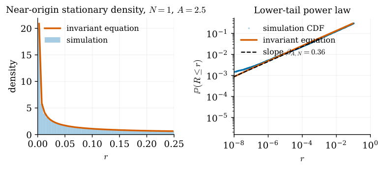

All six main results on absorption cutoff and stationary singularities of rounded Gaussian random dynamical systems are formalized in Lean 4 on top of Mathlib.
Abstract
We study Gaussian random dynamical systems with coordinatewise $\tanh$ nonlinearity, where finite precision is modeled by nearest-grid rounding after each step. Gaussian symmetry reduces the dynamics to an exact Markov chain for the normalized squared radius. Rounding makes the origin absorbing, and the total variation distance to the absorbing equilibrium equals the survival probability of the absorption time. At fixed width, we identify the critical gain and prove an absorption cutoff with Gaussian profile as the mesh tends to zero. At fixed precision, global contraction yields a large-dimension absorption cutoff, while positive drift produces metastability. In the supercritical regime, we prove a large-dimension cutoff to a nonzero invariant law and show that, at fixed dimension, its mass near the repelling origin has a power-law asymptotic. All six main results are formalized in Lean 4 on top of Mathlib and independently checked against restatements that import only Mathlib.
Problem
Gaussian random dynamical systems with coordinatewise tanh nonlinearity, where finite precision is modeled by nearest-grid rounding, produce an absorbing origin. The goal is to characterize total variation cutoff and stationary singularities of these rounded Markov chains.
Approach
Gaussian rotational symmetry reduces the vector dynamics to an exact Markov chain for the normalized squared radius. Rounding makes the origin absorbing, and total variation distance to the absorbing equilibrium equals the survival probability of the absorption time. First-passage asymptotics, drift analysis, and the implicit-renewal method yield cutoff results and power-law tails. All six main results are formalized in Lean 4 over Mathlib and independently checked against restatements importing only Mathlib.
Results
At fixed width, an absorption cutoff with Gaussian profile is proven as mesh vanishes; at fixed precision, a large-dimension absorption cutoff holds under contraction while positive drift gives metastability. In the supercritical regime, cutoff to a nonzero invariant law is established, whose mass near the repelling origin has a power-law asymptotic.

Figure 8.3 : Supercritical stationary Euclidean radius for N=1 and A=2.5 . Left: the near-origin density from simulation and a numerical solution of the invariant equation. The density increases toward zero because \beta_{A,1}<1 . Right: the empirical and numerical lower tails and a reference line of slope \beta_{A,1} . The observed slope is consistent with Theorem 1.10 .